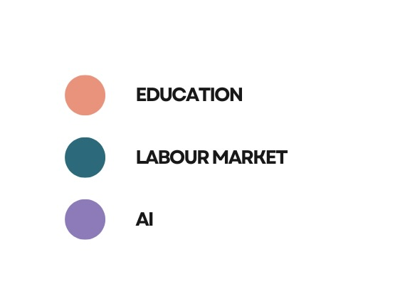
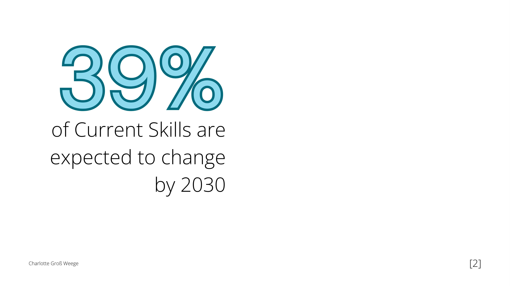
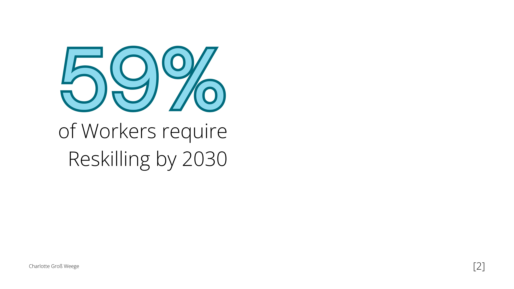
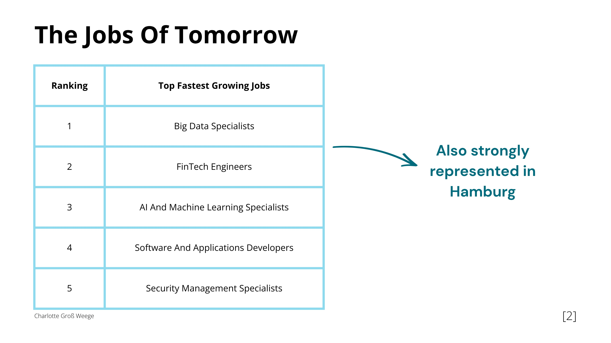
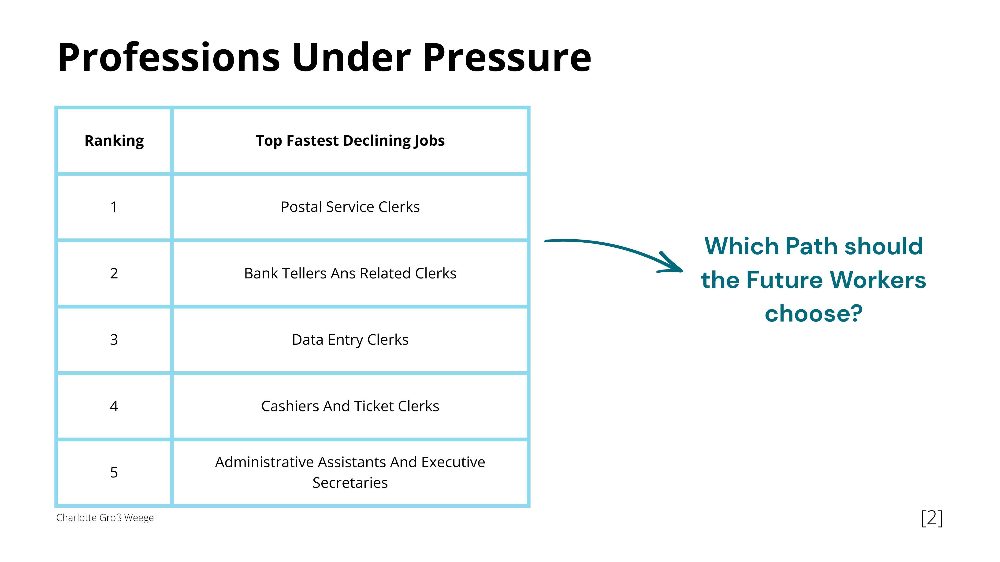
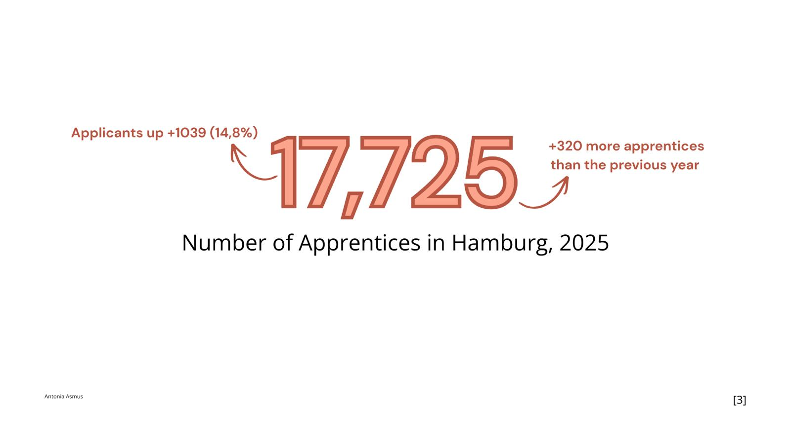

We focus on Germany and occasionally zoom in on Hamburg to talk about local developments. Our goal is to help (future) students and apprentices better understand how AI may influence future career opportunities and educational choices.

Our Big Question
“ [1] By 2030, 14 per cent of the global workforce will have to change career paths – or lose their jobs”
That sentence feels quite harsh to us young people, doesn’t it? But what actually gives us a good chance in the world of work? What opportunities are there, and what should we perhaps focus on more?
Hi, we are "Education Team"", welcome to our website!
We want to take a closer look at all of these questions here, because we know, just as well as you do, how difficult it is to decide on a career path without knowing whether it has any future at all. Especially at such a young age.
Is AI taking over the job market?
AI is becoming an increasingly integral part of our daily lives, and it is also having a growing impact on our work. This technological transformation is evolving at a rapid pace and is expected to shape and influence many areas of work in the future.
As AI continues to rise, you probably ask yourselves: What does this mean for our professional future? Is there even a way to avoid all of this?
The rise of AI is causing a great deal of uncertainty among workers. Artificial intelligence systems are already capable of performing some tasks very well on their own. This has led to concerns about job security, which are evident not only among current workers but also among young people, worries that are constantly increasing.
Many of us worry about our futures according to AI and you probably do too. But are our concerns justified?
Analysis
A Labour Market In Transition
Fears about job security are growing as a result of AI. This raises the question: are these fears justified? Are there really significant changes taking place in the labour market? Studies clearly show that our labour market is changing in relation to AI, and the city of Hamburg is also affected by this: a city where sectors such as technology and innovation are particularly well represented. That is why these changes are becoming increasingly relevant for the city’s job future.


Future workers will have to adapt considerably: by 2030, the majority of workers are expected to undertake additional training programmes and professional development.
In addition to the challenge of finding a job in the future, we now also have to face the task of ensuring that our skills remain up to date at all times.
A Comparison


AI doesn’t just change jobs, it also creates entirely new fields of
work, such as fields of data, machinery and digital technologies.
This is partly because more and more companies are adopting a
data-driven approach. Many of these emerging professions are linked to industries that already play a major role in Hamburg´s economy, such as the IT sector.
But what does this mean for you, who have probably just finished school and don’t know which path to choose?
To answer this, we should also look at the other side of the coin, because alongside new jobs, there are also professions that AI threatens to eliminate. After all, many routine-based office jobs involve repetitive tasks that can easily be replaced by AI systems.
Our data therefore shows quite clearly that not every sector is affected to the same extent by the rise of AI. Whilst some sectors will see new opportunities, others may cease to exist altogether in the future.
Analysis
Why Your Education Still Matters
If you are deciding between a university degree and an apprenticeship, you have probably thought about how much your education will probably affect your future career. The chart below provides some insight by showing how unemployment rates in Germany differ across educational levels. Overall, higher qualifications are associated with lower unemployment risks, which suggests that education remains an important advantage in today's labour market.
However, obtaining a university degree alone does not guarantee the same career perspectives for everyone. The field of study we choose also plays an important role in shaping future employment opportunities. To better understand these differences, the following visualization explores unemployment rates across different academic disciplines in Germany.
Your Degree Can Shape Your Career Opportunities
Choosing a degree is an important personal decision. Alongside your interests and strengths, it is also worth considering how different fields of study can influence future career opportunities. In Germany, the unemployment rates differ between fields of study, reflecting different levels of labour market demand.
Graduates in disciplines such as Computer Science, Engineering, and Medicine generally experience lower unemployment rates, while graduates from other fields often face greater challenges when entering the work environment.
However, these figures mainly reflect today's labour market. As AI continues to reshape industries and job requirements, an important question remains: Will the degree we choose today offer the same opportunities in the future?
Choosing Your Future
The rise of AI doesn't just affect people who are already working. It affects the choices we're making right now, before we've even entered the labour market. Every degree we pick, every apprenticeship we sign up for, is essentially a bet on what our working future will look like. But are we placing our bets in the right places?
Students in Hamburg: Betting on a Changing Market
In the winter semester 2024/25, over 14,000 first-year students enrolled at Hamburg's universities and what they chose to study already reveals a lot about where young people believe their futures lie.
Business, finance and banking-related degrees pulled in by far the most freshmen, while other fields are left far behind with a more evenly spread out.
Interestingly, the enrollment numbers seem to reflect a connection between subject choice and unemployment risk. Finance, Banking and Insurance tops the list of subjects chosen by Hamburg's first-year students and, as the unemployment chart at the start of this section showed, it's also one of the fields with the lowest unemployment rate in Germany, at just 2.3%. Marketing and Advertising, on the other hand, sits near the bottom of the enrollment ranking and happens to carry the highest unemployment rate of all fields, at 5.6%. Whether this is a coincidence or a sign that students are already paying attention to the job market, it suggests that these choices are influenced by more than just personal interest.
But university isn't the only route into the labour market. Just as many young people, maybe even more, are choosing a different path entirely: an apprenticeship.

In 2025, 17,725 young people in Hamburg started an apprenticeship, outnumbering the university freshmen of 2024/25. That’s also over 300 more apprentices than in 2024 In addition, the number of applicants rose by nearly 15% compared to the previous year, suggesting that an apprenticeship is becoming an increasingly attractive option for us young people navigating an uncertain job market.
Whichever path we choose, lecture hall or workplace, our decisions are already being shaped by a labour market that's shifting under all our feet. But choosing wisely is more than avoiding unemployment, it also means knowing where the labour market is short on people.
Analysis
Labor Shortage vs. AI: What It Means for Your Career Choice
When analyzing unemployment rates and the development of artificial intelligence, it is also important for us as students to understand where labor shortages exist, as this is another key factor to consider when choosing a course of study. As of May 2026, there were 643,000 open job positions in Germany, 58% of which required specific qualifications, particularly in the medical, sales, engineering, and logistics sectors.
Looking at the distribution of labor demand across Kreise and kreisfreie Städte, Hamburg is one of the cities with the highest demand for workers. As of May 2026, the city accounted for 2.35% of the total labor demand in Germany, a significant share compared to the country as a whole. Only Cologne and Berlin experienced greater labor shortages, placing Hamburg third among German cities in terms of the severity of the skilled labor shortage.
This raises the question of whether AI will help close this gap and whether we, as students in Hamburg, will still have a good chance of finding employment that matches our qualifications.
Anaylsis
Will Your Future Job Be Changed by AI?
After looking at national employment trends, this section shifts the focus to Hamburg to explore how AI-driven automation could shape the regional labour market in the coming years. If we are deciding on a degree or apprenticeship, it makes sense to take a closer look at which occupational fields may change the most by 2030.
While occupations in transport, logistics, security, and manufacturing show the highest automation potential, careers in healthcare, education, and scientific professions continue to rely heavily on human expertise.
Rather than asking which jobs will disappear due to replacement of AI, the more relevant question is how our future job may change and which skills will become valuable in an AI-influenced labour market.
Key Insight
Your Biggest Advantage Is Being Human
As Al becomes more capable, it is assumable that technical skills will not only dominate the future of work but replace human work overall. However, this data suggests us something else. The most valuable soft skills for employers are those that require human judgement and creativity. Al can generate ideas and automate tasks but a thing it can never do is replace is real human connection. Did you expect that?
The ones who stand out are the ones who continue to think for themselves, adapt and use technology to enhance and not replace their abilities. A skill that should be considered even more important because of Al. So when deciding for the way for you, maybe considering what interests you is more important than the pure look on the labour market.
The Best For Your Career Isn't Another Technical Skill
Furthermore, the question is not whether AI will rearrange jobs, it already is. But the shift of jobs integrated with AI show a change towards soft skills measured by the EPOCH score (Empathy, Position, Opinion, Creativity, Hope).
What’s interesting is that this not only concerns higher-level jobs (also called “professionalized jobs”) where easy tasks such as screening curriculums for recruiting are being taken over by AI but the the other way around as well. Lower-level jobs (also called “democratized jobs”), meaning hard skills complemented by AI show a shift as well. An example could be the making of a financial plan by AI leaving the selling and talking to clients to the financial adviser. The question truly really is which jobs will stay non-AI-exposed?
A degree is an important foundation for opening doors but knowledge alone is no longer enough. Its who sells it and keeps the doors open; Our passion for work and who we are as human being count more over change of time.
Next Steps
So… Will Your Degree Still Matter?
So finally, does your degree matter in the age of AI or should you rather decide on an apprenticeship? We hope you know the answer yourself: whatever feels good for you and interests you the most. There is no one right answer.
Of course the current job market and your field of study play a role in salary and whether you will find a job as fast, let’s not get ahead of ourselves. Nevertheless, your experiences and willingness to learn play as much if not more a role in presenting yourself. So why are so little people willing to further educate themselves, do they believe AI will take them over, is it too time consuming? Whatever the reasons are, don’t settle on your knowledge but grow it with time. Especially when companies keep investing in further education and highlight its importance.
Are you ready to invest and live for yourself?